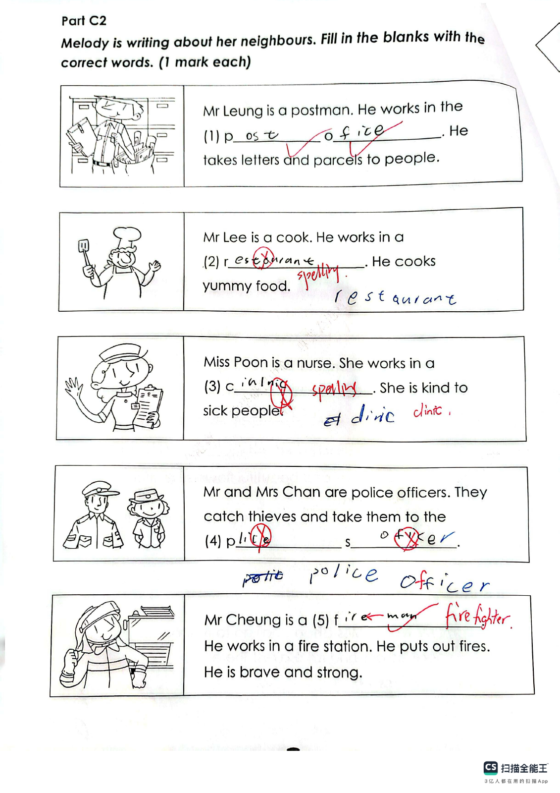
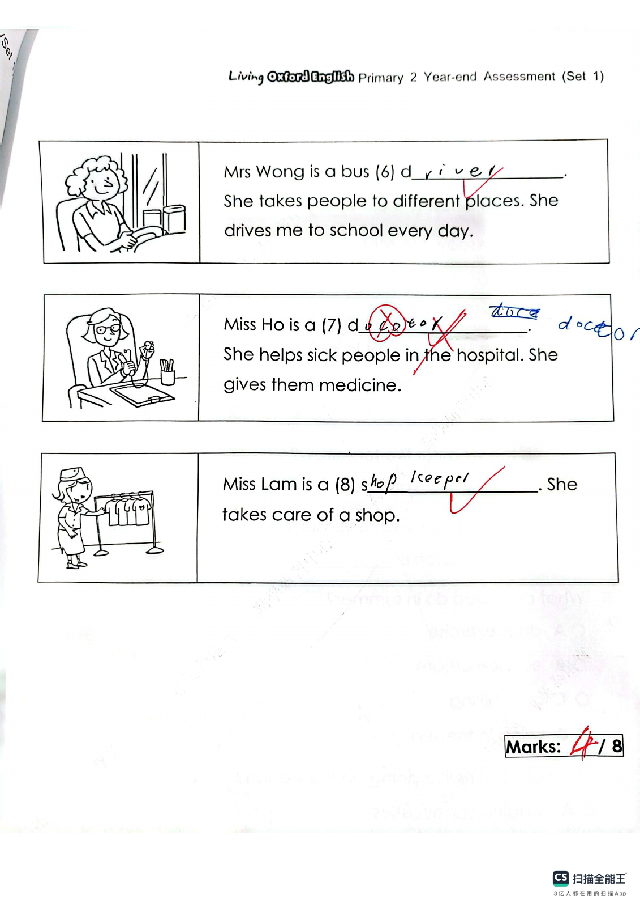
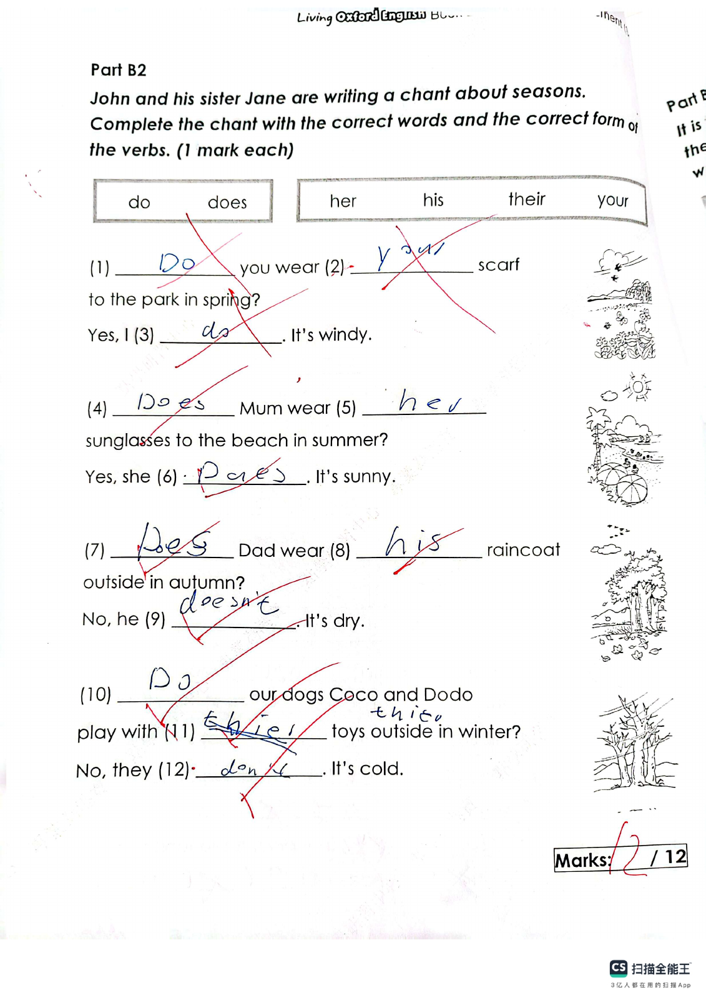
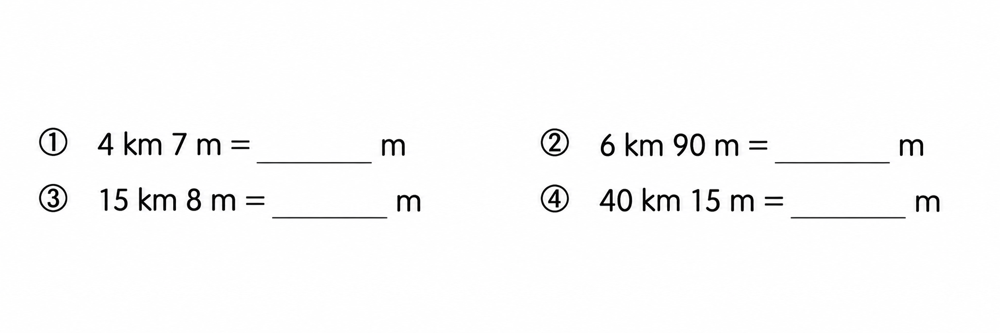
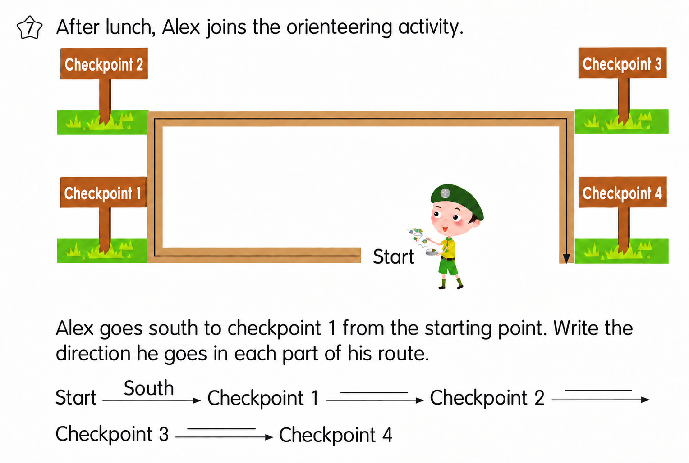

![The map below shows the routes from Alex’s home to the campsite. (a) The route between the campsite and the ____ is the shortest. This route is ____ km long. (b) The shortest route from Alex’s home to the campsite is ____ km long. The shop(s) that he goes past in this route include(s): ____. (c) The instructor needs to go from the campsite to the supermarket and the accessory store to buy something, and then go back to the campsite. He has to travel at least ____ km, and his route is: Campsite → ____ → Campsite.](assets/question_sets/math_grade3_mistakes_2026-09-22_clean/image5.png)
Answer: (a) supermarket, 5 km; (b) 12 km, bakery and supermarket; (c) 24 km: Campsite → supermarket → campsite → accessory store → Campsite, or the reverse route
已掌握
| # | 单词/词组 | 中文意思 | 例句/说明 | 已掌握 |
|---|---|---|---|---|
| noun 名词 | ||||
| 1 | painting | 绘画 | This painting is beautiful. | |
| 2 | restaurant | 餐馆 | We eat dinner in a restaurant. | |
| 3 | writer | 作家 | The writer writes stories. | |
| 4 | eve | 节日的前一天 | We visited Grandma on the eve of Chinese New Year. | |
| 5 | Wednesday | 周三 | My piano lesson is on Wednesday. | |
| 6 | cookies | 曲奇饼 | Mum baked some cookies. | |
| 7 | reading | 阅读 | Reading helps me learn new things. | |
| 8 | science | 科学 | We learn about plants in science class. | |
| verb 动词 | ||||
| 9 | visit | 参观；登录 | I visit the museum with my class. | |
| 10 | pick | 采摘；挑选 | We pick apples from the tree. | |
| preposition 介词 | ||||
| 11 | during | 在……期间 | I read during the break. | |
| phrase 短语 | ||||
| 12 | clean the dishes | 洗餐具 | We clean the dishes after dinner. | |
| adjective 形容词 | ||||
| 13 | helpful | 有帮助的 | This map is helpful. | |
| 14 | polite | 礼貌的 | It is polite to say thank you. | |
| 15 | beautiful | 美丽的 | The flower is beautiful. | |
| 16 | smart | 聪明 | The smart child solves the problem. | |
| adverb 副词 | ||||
| 17 | seldom | 很少 | I seldom eat sweets. | |
| verb/noun 动词/名词 | ||||
| 18 | change | 改变，找零 | I can change my answer. | |
| uncategorized 未分类 | ||||
| 19 | office | 办公室 | The teacher is in her office. | |
| 20 | notice | 通知 | A notice on the door says the library is closed. | |
| # | 单词/词组 | 中文意思 | 例句/说明 | 已掌握 |
|---|---|---|---|---|
| adjective 形容词 | ||||
| 1 | naughty | 调皮的 | The naughty puppy runs around. | |
| 2 | wrong | 错误的 | The answer is wrong. | |
| noun 名词 | ||||
| 3 | grammar | 语法 | We are learning English grammar. | |
| 4 | buffet | 自助餐 | We had lunch at a buffet. | |
| 5 | fish | 鱼 | I can see a fish in the water. | |
| 6 | belt | 腰带 | He wears a black belt. | |
| 7 | website | 网站 | The school website has news. | |
| 8 | mushroom | 蘑菇 | A mushroom is a kind of food. | |
| 9 | article | 文章 | Read the article. | |
| 10 | carpet | 地毯 | The carpet is on the floor. | |
| 11 | clown | 小丑 | The clown made us laugh. | |
| 12 | volunteer | 志愿者 | A volunteer helps us plant trees. | |
| 13 | barbecue | 烧烤 | We had a barbecue in the garden. | |
| 14 | stadium | 体育馆 | The game is in the stadium. | |
| 15 | farm | 农场 | Ben wants to go to the farm. | |
| 16 | PE | 体育课 | He's good at PE. | |
| noun phrase 名词短语 | ||||
| 17 | a packet of potato chips | 一包薯片 | He eats a packet of potato chips. | |
| 18 | a fork | 叉子 | Mix the egg with a fork. | |
| 19 | a purse | （女式）钱包 | I gave her a purse. | |
| 20 | General Studies | 常识科 | Some pupils like General Studies. | |
| verb 动词 | ||||
| 21 | reply | 回复 | Please reply to my email. | |
| phrase 短语 | ||||
| 22 | Hong Kong Island | 香港岛 | My uncle lives on Hong Kong Island. | |
| verb phrase 动词短语 | ||||
| 23 | play basketball | 打篮球 | Can you play basketball? Yes, I can. | |
| 24 | play tennis | 打网球 | I like to play tennis with my friend. | |
| 25 | look at shells | 看贝壳 | We look at shells on the beach. | |
| 26 | go to a flower market | 逛花市 | We go to a flower market before Chinese New Year. | |
| 27 | visit relatives | 探访亲戚 | We visit relatives at Chinese New Year. | |
| 28 | play with lanterns | 玩灯笼 | We play with lanterns at night. | |
| 29 | watch dragon boat races | 看龙舟比赛 | We watch dragon boat races every year. | |
| uncategorized 未分类 | ||||
| 30 | refuse | 拒绝 | I refuse to tell a lie. | |
| # | 单词/词组 | 中文意思 | 例句/说明 | 已掌握 |
|---|---|---|---|---|
| time/date 时间日期 | ||||
| 1 | April | 四月 | April is the fourth month. | |
| 2 | December | 十二月 | December is the twelfth month. | |
| 3 | Friday | 星期五 | Friday is a weekday. | |
| 4 | Sunday | 星期日 | Sunday is a weekend day. | |
| time unit 时间单位 | ||||
| 5 | year | 年 | A year has 12 months. | |
| 6 | day | 日 | A day has 24 hours. | |
| numbers 数字 | ||||
| 7 | eleven | 11 | Eleven is 11. | |
| 8 | nineteen | 19 | Nineteen is 19. | |
| 9 | hundred | 百 | One hundred is 100. | |
| ordinal numbers 序数 | ||||
| 10 | first | 第一 | This is the first shape. | |
| 11 | third | 第三 | This is the third shape. | |
| solid shape 立体图形 | ||||
| 12 | quadrilateral prism | 四棱柱 | A quadrilateral prism has quadrilateral faces. | |
| 13 | pentagonal pyramid | 五棱锥 | A pentagonal pyramid has one pentagonal base and five triangular side faces. | |
| 14 | base | 底 | The base is at the bottom. | |
| 15 | face | 面 | A cube has six faces. | |
| # | 单词/词组 | 中文意思 | 例句/说明 | 已掌握 |
|---|---|---|---|---|
| operations 运算 | ||||
| 1 | total | 总共的 | Find the total number of apples. | |
| 2 | borrowing | 借位 | Borrowing helps when we subtract. | |
| 3 | be left | 剩下的 | How many apples will be left? | |
| geometry 几何 | ||||
| 4 | angle | 角 | An angle is formed by two rays with the same endpoint. | |
| 5 | right angle | 直角 | A right angle is 90 degrees. | |
| 6 | dotted line | 虚线（点线） | Draw a dotted line between the two points. | |
| question word 题目词 | ||||
| 7 | estimate | 估计 | Estimate the answer first. | |
| 8 | count | 数数 | Count from 1 to 10. | |
| 9 | backwards | 向后；倒着 | Count backwards from 20. | |
| shape 形状 | ||||
| 10 | circle | 圈；圆 | Draw a circle around the answer. | |
| comparison 比较 | ||||
| 11 | fewest | 最少的 | Which group has the fewest? | |
| time/date 时间日期 | ||||
| 12 | minute hand | 分针 | At three o'clock, the minute hand points to 12. | |
| 13 | second hand | 秒针 | The second hand goes around the clock once in one minute. | |
| position 位置 | ||||
| 14 | behind | 后面 | The bag is behind the chair. | |
| operations calculation 运算 | ||||
| 15 | product | 积 | The product is the answer in multiplication. | |
| 16 | expression | 式子 | Write the expression in horizontal form. | |
| 17 | dividend | 被除数 | The dividend is divided by the divisor. | |
| 18 | horizontal form | 横式形式 | Write it in horizontal form. | |
| 19 | checking | 验算 | Checking by addition shows that 9 - 4 = 5 is correct: 5 + 4 = 9. | |
| currency money 货币 | ||||
| 20 | cent | 分 | One cent is a small amount of money. | |
| 21 | exchange | 交换 | We exchange money at the counter. | |
| 22 | expensive | 昂贵的 | This toy costs $50. It is more expensive than the $20 toy. | |
| measurement 测量 | ||||
| 23 | length | 长度 | Find the length of the line. | |
| 24 | pointer | 指针 | The pointer on the scale shows 2 kg. | |
| position order 位置和顺序 | ||||
| 25 | following | 下面的 | Answer the following questions. | |
| directions tool 方向工具 | ||||
| 26 | compass | 指南针 | A compass shows directions. | |
| 句型结构 | ||||
| 27 | Angle ... is the smallest. | 角......是最小的。 | Angle B is the smallest. | |
| 28 | ... is to the east of ... | ......位于......的东侧。 | The school is to the east of the park. | |
| plane shape 平面图形 | ||||
| 29 | trapezium | 梯形（只有一组对边平行的四边形） | A trapezium has exactly one pair of parallel sides. | |
| 30 | upper base | 上底 | The upper base of this trapezium is 4 cm long. | |




